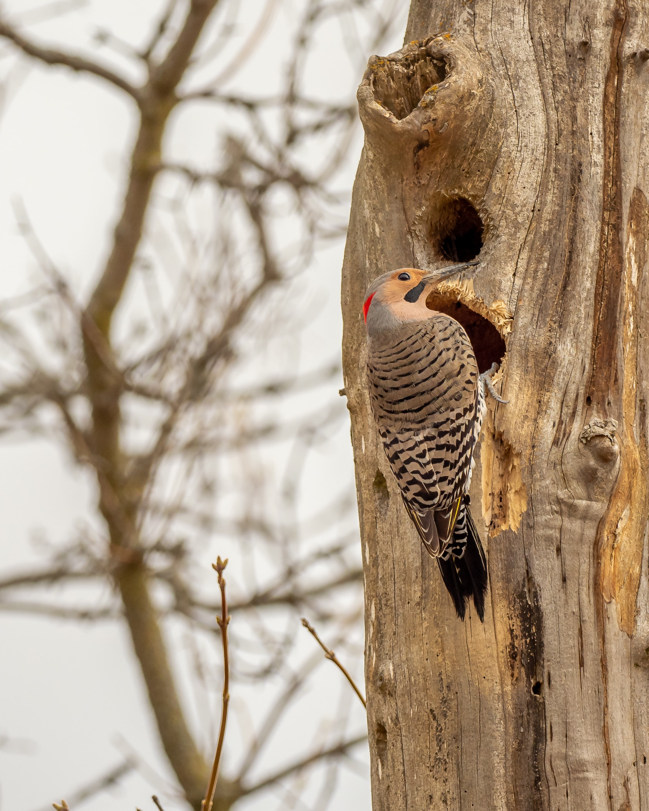
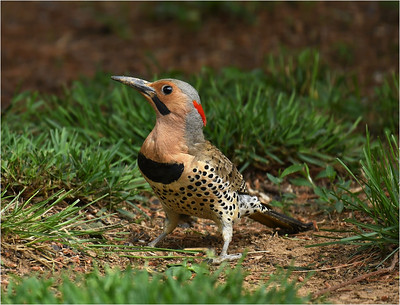
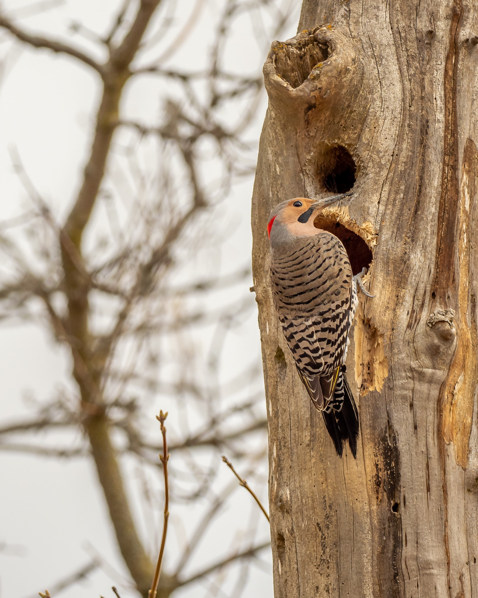
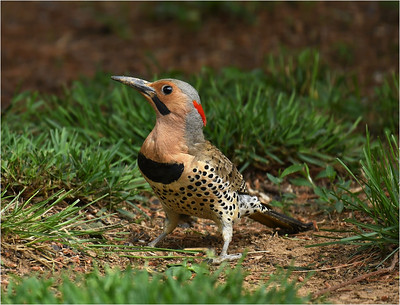
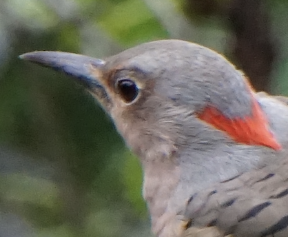

General info
The Northern Flicker (Colptes auratus) is a member of the Woodpecker family. This pidgeon size family member can be identified by the red triangle on the back of it's neck. They appear to have an overall brown color with a white bottom. With a close look the brownish appearance is actually a rich pattern of black spots, bars and crescents. The undersides of the tail and wing feathers are bright yellow.
Behavior
Northern Flickers unlike other birds spend most of it's time on the ground. They fly as most Woodpeckers do with heavy flaps and intermittent gliding. These birds are often considered a nuisance to the public as they have been known to damage houses and other buildings. The male Flicker lacks the ability to attract a mate through song so they resort to "pecking" on surfaces to announce their presence. See video below of the bird at work (No Sound).
Common Names
There are many names associated with the Northern Flicker. The common names include "yellowhammer", "clape", "gaffer woodpecker", "heigh-ho", "yarrup" and "gawker bird". These nick names were derived from the imitation of the noises created by the species.
Click "play"to hear the standard call of the
Northern Flicker.
∰ Fun Fact ∰
There are over 100 common names for the Northern Flicker
∰
Habitat
The Northern Flicker is one of few members of the Woodpecker family that is known to migrate. Native to most of North America, parts of Central America, Cuba and the Cayman Islands. They do generally nest in holes in trees as other Woodpeckers. However, it has been found that they will also burrow in the ground. The Northern Flicker spends a lot of time on the ground and when found in trees they are usually stood upright.
∰ Fun Fact ∰
Flickers are considered "Lucky" birds and are associated with friendship and happiness
∰